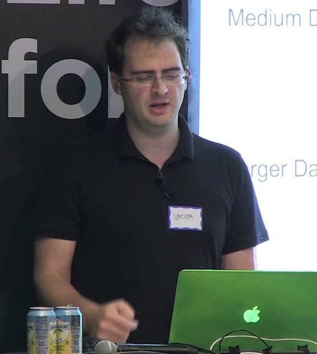

D3.js is een library die een link vormt tussen HTML5, JavaScript, CSS (deze kennen jullie al) en SVG waar we later dieper op in gaan. D3 staat voor Data Driven Documents. Dit betekent dat de visualisaties gemaakt met D3 zo "losjes" geschreven zijn dat je er andere datasets in kan zetten en de visualisaties vervolgens op dynamische wijze zichzelf aanpassen aan je data (zie scatterplot hier onder).
Nou.. Heel veel dus! Er kunnen spelletjes mee gemaakt worden (ookal is dit niet helemaal waar het voor ontwikkeld is), maar ook live feed visualisaties, scatterplots, sunbursts je kan het zo gek niet bedenken! Er is bijvoorbeeld een grote gallerij met allemaal verschillende soorten visualisaties waarvan je de code ook kan zien! Klik hier onder maar, dan kun je het zelf zien.
Op naar de gallerij!In 2011 is de D3 JavaScript library ontwikkeld door drie mensen: Jeff Heer, Mike Bostock en Vadim Ogievetsky. Dit deden ze om een beter meer expressief framework te creëren die zich focussed op het web en prestatie.
Mike Bostock
Er zijn heel veel voorbeelden te vinden die door Mike Bostock ontwikkeld zijn. Als je een D3 voorbeeld zoekt is het vrijwel onmogelijk om Mike Bostock niet tegen te komen!
Jeff Heer
Jeff Heer was de Proffesor waar Mike Bostock zijn Ph.D. bij deed. Hij geeft momenteel les bij de University of Washington en ziet het als zijn missie om vermogen om communicatie van data te verbeteren bij mensen door design van interactieve data visualisaties te optimaliseren.
Vadim Ogievetsky
Vadim Ogievetsky heeft zijn masters degree in Computer Science gehaald onder Jeff Heer, en heeft ook meerdere keren gesproken over D3 bij onder andere de Universiteiten van Berkeley, Harvard en Stanford!
